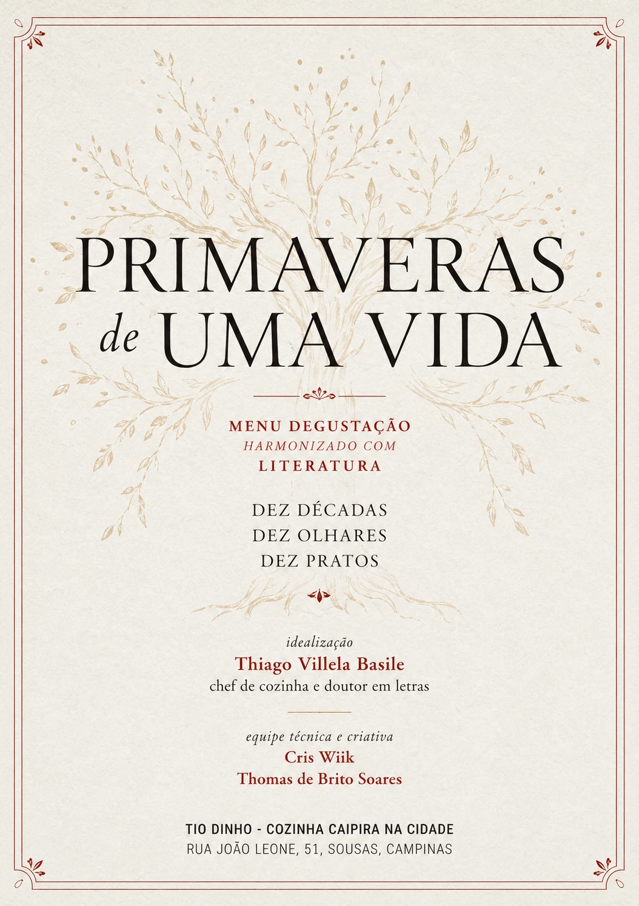
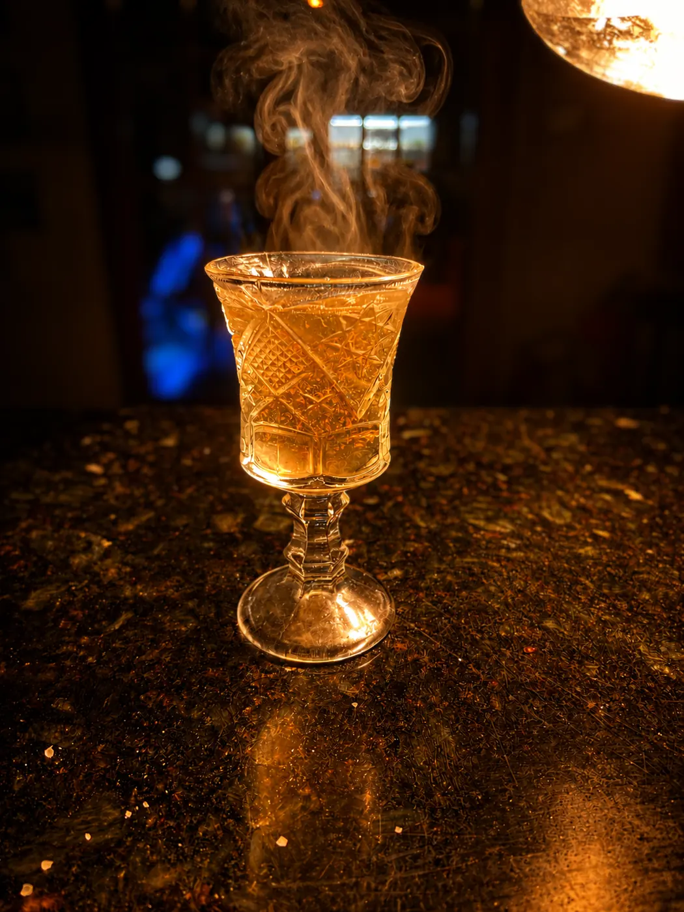
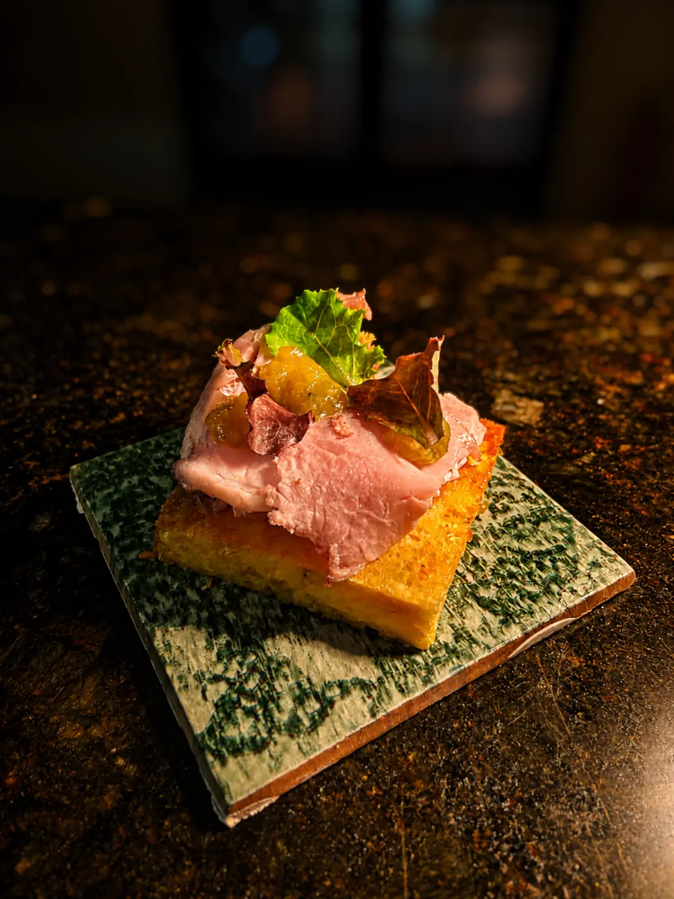
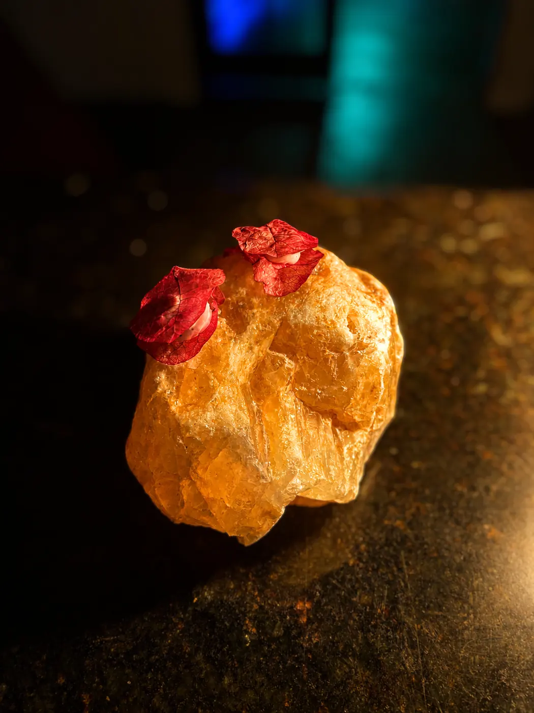
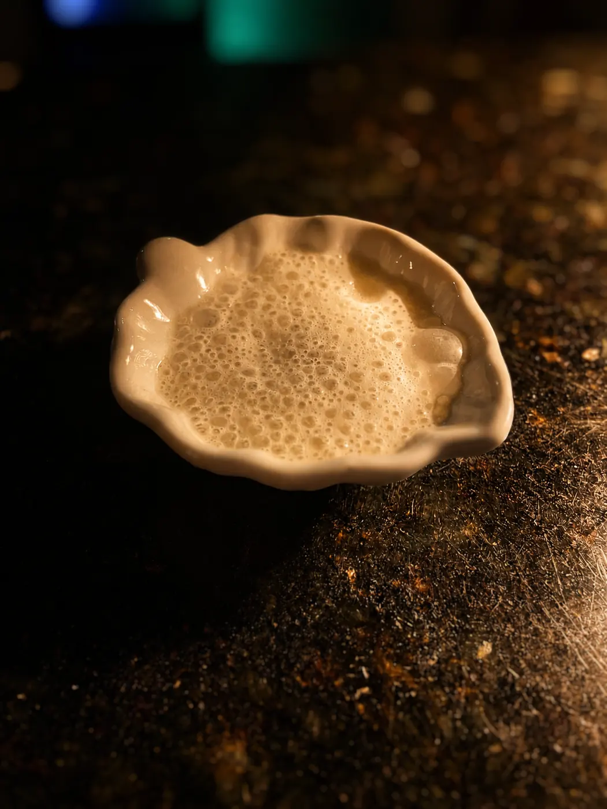
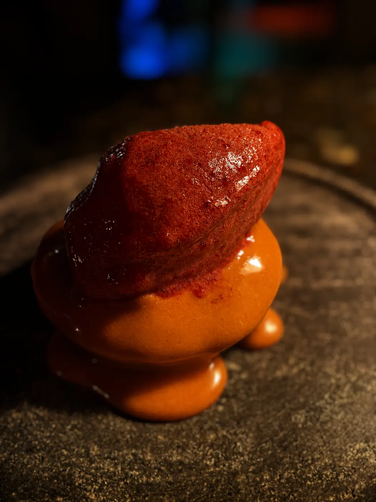
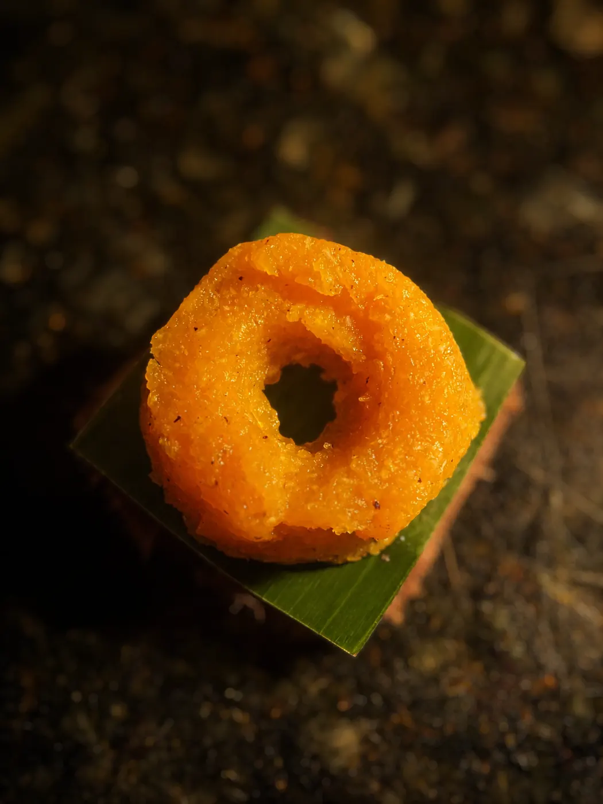
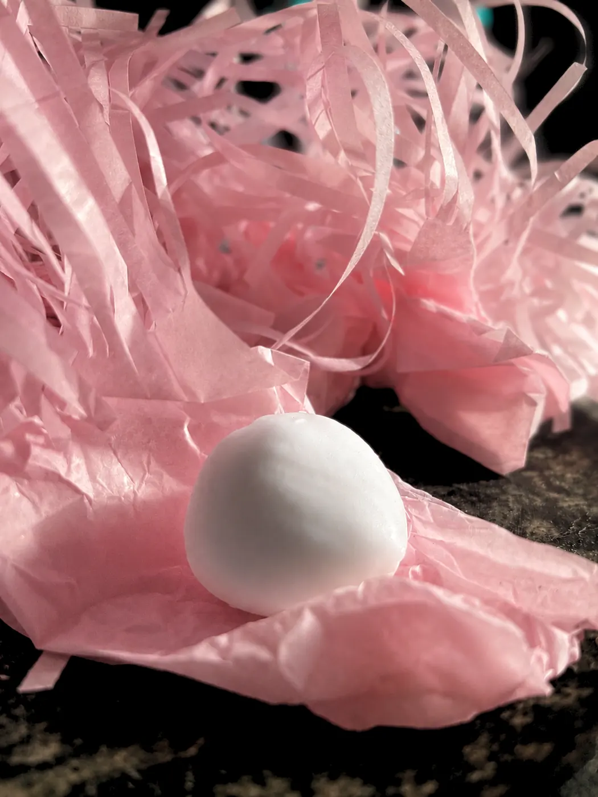

01
Chegue entre 19h e 20h
Essa é a faixa de chegada recomendada para começar o percurso com tranquilidade.

Uma vida atravessada por dez textos e dez pratos, dos primeiros anos à velhice. Literatura e comida se encontram à mesa sem determinar uma leitura: a experiência acontece em cada pessoa.

Uma vida pode ser contada de muitas maneiras. Em Primaveras de uma Vida, escolhemos atravessá-la pela literatura e pela comida.
O percurso vai dos 0 aos 99 anos. Cada década encontra um texto literário e um prato criado para entrar em relação com ele. Minou Drouet, Arthur Rimbaud, Álvares de Azevedo, Júlio Kamêr R. Apinajé, Dante Alighieri, Fernando Pessoa, Conceição Evaristo, Mário Quintana, Manoel de Barros e Cora Coralina acompanham a noite.
É um jantar. Cada mesa vive a experiência no próprio ritmo, lendo, comendo e conversando. Cada pessoa recebe seu livreto com os textos e o menu.
Essa é a faixa de chegada recomendada para começar o percurso com tranquilidade.
Cada pessoa recebe um exemplar com o menu e os trechos literários selecionados.
Os pratos chegam em sequência. Não há sarau, leitura coletiva ou explicação dos textos pelo chef à mesa.
Esse é o tempo habitual do percurso, com pequenas variações conforme o ritmo de cada mesa.
A harmonização propõe relações. O texto não vem acompanhado de uma explicação pronta: prato, leitura, memória e percepção se encontram em quem está à mesa.
Água Corrente · dose de água de tomate

No Cabaré-Verde · manauê, manteiga, presunto e geleia de cambuci

Lira dos Vinte Anos · ravioli aberto de primavera, coalhada e mel borá

A Flecha · pupunha, creme de pinhão e mostarda com uvaia

A Divina Comédia · tartar de beterraba, iogurte de araçá e chips de raízes

Tabacaria · carne na lenha, glace de cacau, purê de cebola e salada de mato
Da Calma e do Silêncio · “Amendoim”

O Velho do Espelho · cavaca com sorvete de grumixama

O Apanhador de Desperdícios · babelinhas

Aninha e suas Pedras · bala de coco


Cada pessoa recebe um livreto com o menu e os trechos selecionados. Ele funciona como companhia durante o percurso: você pode ler antes de cada prato, voltar ao texto depois de provar, conversar com quem está à sua mesa ou simplesmente deixar que a relação apareça no seu tempo.
O chef não explica os textos à mesa. A proposta da harmonização é observar o que o encontro entre literatura e comida desperta em cada pessoa.
Baixar / abrir o livretoO menu custa R$ 140 por pessoa. Para confirmar a reserva, você paga 50% antecipadamente. Os outros 50% são pagos no restaurante ao final do jantar.
Não. Primaveras de uma Vida é um jantar. Você faz sua reserva e ocupa sua própria mesa. Não há apresentações coletivas, roda de leitura ou atividades conduzidas entre as mesas.
Cada pessoa recebe um livreto com os textos selecionados e o menu. Ao longo do jantar, os pratos são servidos em diálogo com diferentes momentos da vida e com as obras escolhidas. O livreto acompanha toda a experiência e fica com você ao final.
Não. A proposta da harmonização é permitir que cada pessoa estabeleça sua própria relação entre texto, prato, memória e percepção. O chef não apresenta uma interpretação da obra à mesa nem determina o que deve ser percebido.
Não. Não há conhecimento prévio necessário, interpretação correta ou obrigação de comentar o que foi lido.
Claro. O livreto pode provocar lembranças, perguntas e conversas entre as pessoas da sua mesa. Isso acontece espontaneamente, sem mediação do restaurante.
Recomendamos chegar entre 19h e 20h, para que a experiência comece com tranquilidade e siga no ritmo da sua mesa.
Em geral, entre 1h30 e 2h. O tempo pode variar um pouco conforme o ritmo da mesa.
Depois que identificarmos o pagamento antecipado de 50%, nossa equipe enviará uma mensagem por e-mail e/ou WhatsApp confirmando a reserva. O preenchimento do formulário, sozinho, não confirma a mesa.
As reservas pelo site devem ser feitas com pelo menos 2 dias de antecedência. Se faltarem menos de 2 dias para a sexta-feira desejada, escreva para tiodinhocozinha@gmail.com para consultar se ainda há disponibilidade.
O menu custa R$ 140 por pessoa. Para confirmar a reserva, são pagos R$ 70 por pessoa antecipadamente. Os R$ 70 restantes por pessoa são pagos no restaurante ao final do jantar.
Sim. Os R$ 70 antecipados por pessoa podem ser pagos pelo link Cielo em até 2x.
Sim. A chave Pix é paulistaniadesvairada@gmail.com. Após identificarmos o pagamento, enviaremos a confirmação da reserva por e-mail e/ou WhatsApp.
Até 7 dias antes do jantar, há reembolso integral do valor pago. De 6 a 2 dias antes, o reembolso é de 50% do valor pago. Com 1 dia de antecedência, no dia do jantar ou em caso de ausência sem aviso prévio, não há reembolso nem conversão automática em crédito.
Sim. Caso você não possa comparecer, pode solicitar a transferência da reserva para outra pessoa, desde que informe a equipe antes da realização do jantar.
Sim. É permitida bebida própria mediante taxa de rolha de R$ 25 por garrafa. Bebidas também podem ser adquiridas no local.
Não. As bebidas são cobradas à parte.
Informe alergias, intolerâncias ou restrições no momento da reserva. A equipe avaliará a possibilidade de adaptação de acordo com o menu.
Sim. Sazonalidade, disponibilidade de ingredientes e necessidades operacionais podem exigir ajustes, preservando a proposta da experiência.